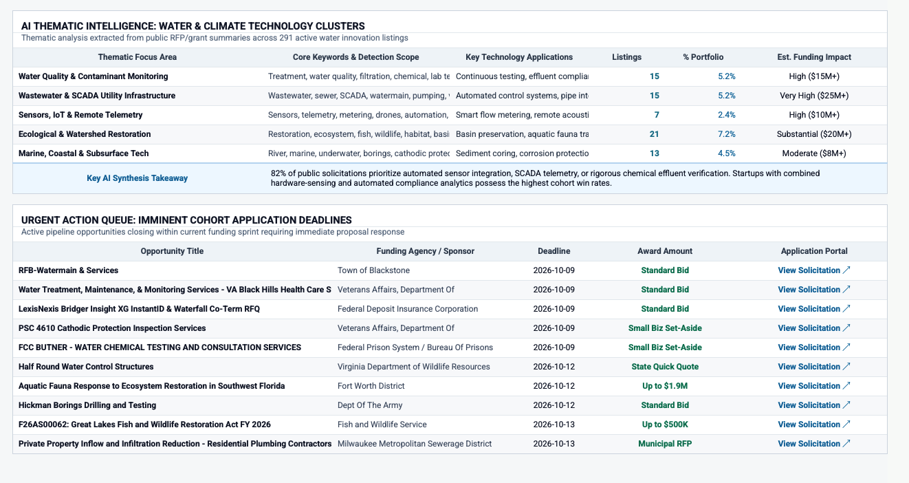

01Problem
gener8tor's Great Lakes Innovation Accelerator supports five early-stage water and climate-tech startups per cohort. The grants, contracts, prizes and pitch competitions that fit them are spread across dozens of federal, state, city and water-utility websites. Founders were finding them late, often through a LinkedIn post, or not at all.
02How I thought about it
I started out building a grant matcher for our five startups. Partway through I changed the goal to the database itself. Any future cohort can point their own AI tools at it and keep using it after the program ends, without depending on my servers or AI credits.
I also kept AI out of the data pull. In my experience AI gets lazy with search, so the scrapers are plain code and every cut is logged with a reason. AI helped me write the code, not run it.
03What I built
- A Python job on GitHub Actions runs each morning, pulls every source and converts listings into one format: type, stage, deadline, amount, who can apply and a short summary.
- Sources include Grants.gov, SAM.gov, the Federal Register, NSF and SBIR topics, state portals in California, Illinois, Massachusetts and Virginia, bid boards in New York, Chicago and Cleveland, and water utilities from Detroit to Milwaukee to Minneapolis.
- Filters live in one settings file that founders can edit for their own copy. They drop what an early-stage startup can't win, like construction bids and certification-only set-asides.
- Closed water listings move to a yearly archive, so later cohorts keep the history.
- A Google Sheet is the front end, with tabs for matches, a calendar of yearly programs and leads from accelerator news feeds.
- Each source can fail without stopping the others. I only get an alert after a source fails three days in a row.

04Results
In its first week the tracker held about 12,700 open listings, narrowed to 291 matches for the cohort, with another 156 set aside by the filters and logged. I shared it with the cohort and gener8tor leadership. The repo is public, so each startup can copy it and run it on their own.
05What's next
- Founder profiles so each startup gets its own matches.
- An outcomes log of who applied and what they won.
- More sources for Michigan and New York.